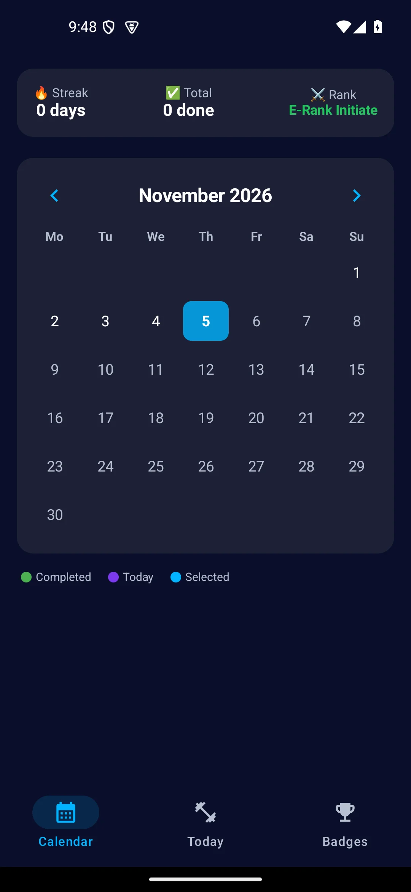

Workout Level Up
Follow a training calendar, log completed exercises and earn badges.

How it works
Room saves workout records. Compose presents the calendar, daily checklist, streaks and badges.
Verification and demo scope
The debug build and lint passed, with 16 lint warnings. The browser demo simulates the calendar and checklist with its own data.